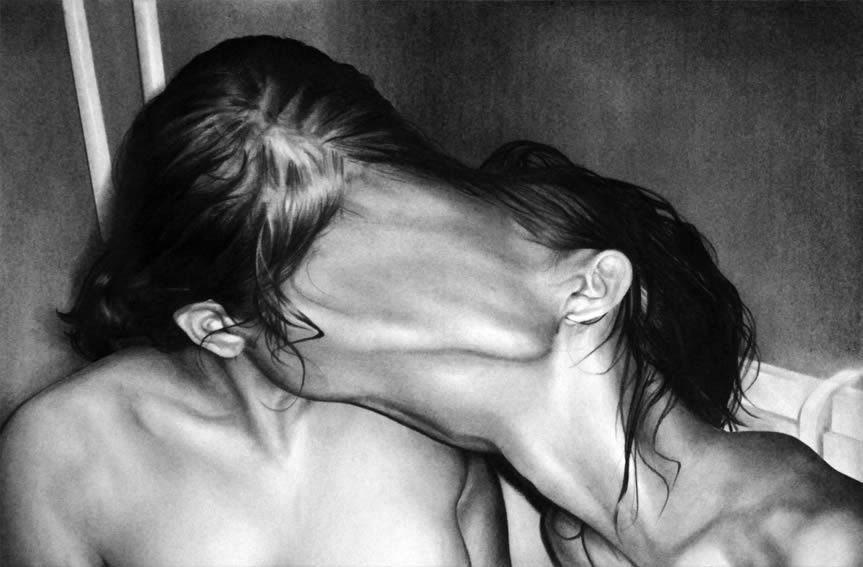
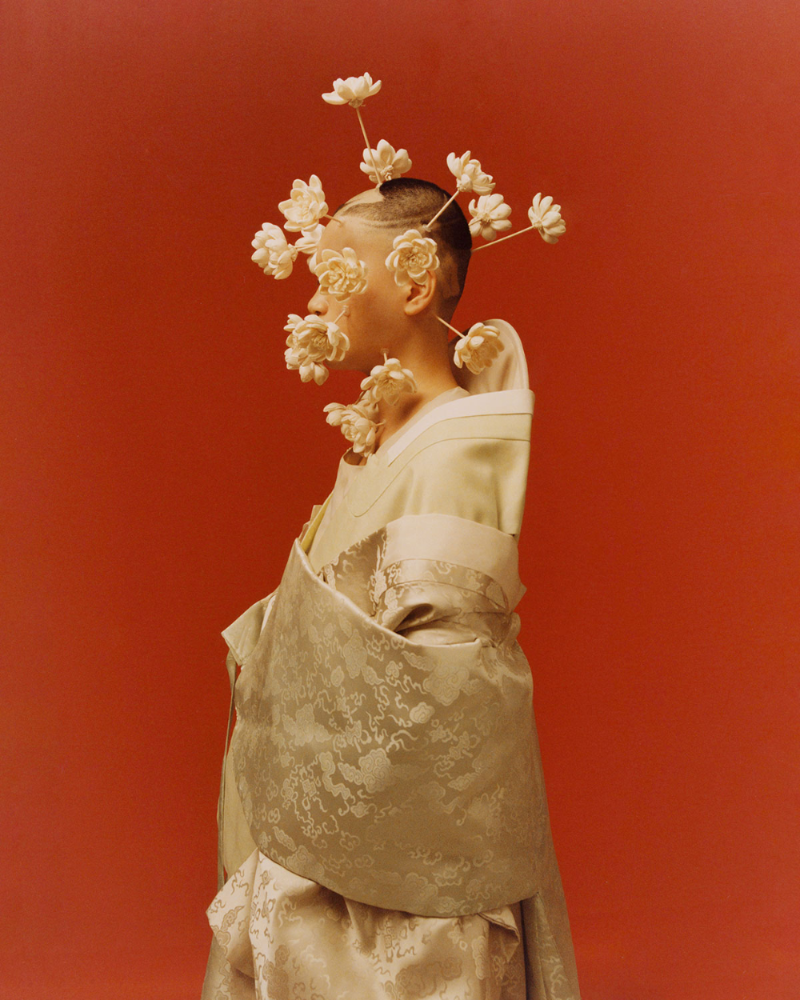
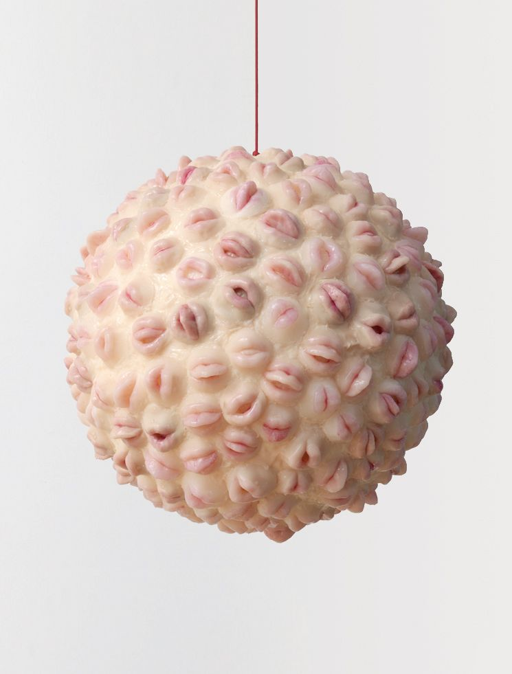
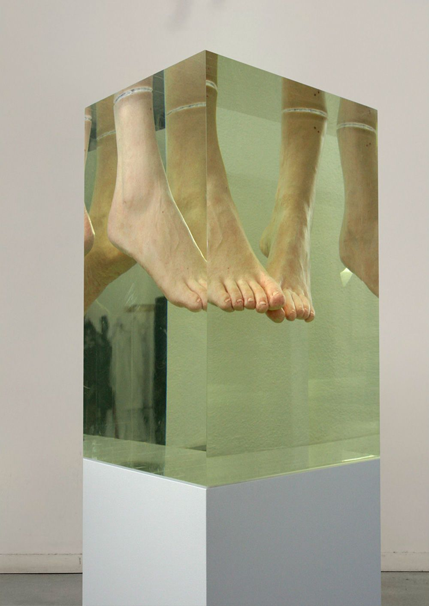
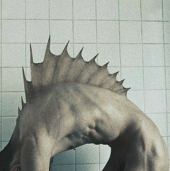
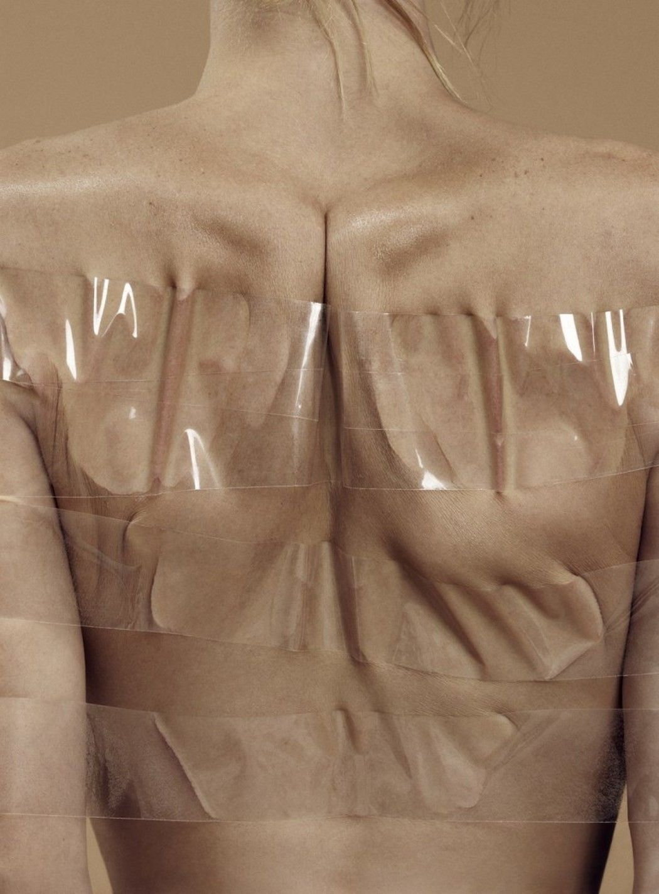
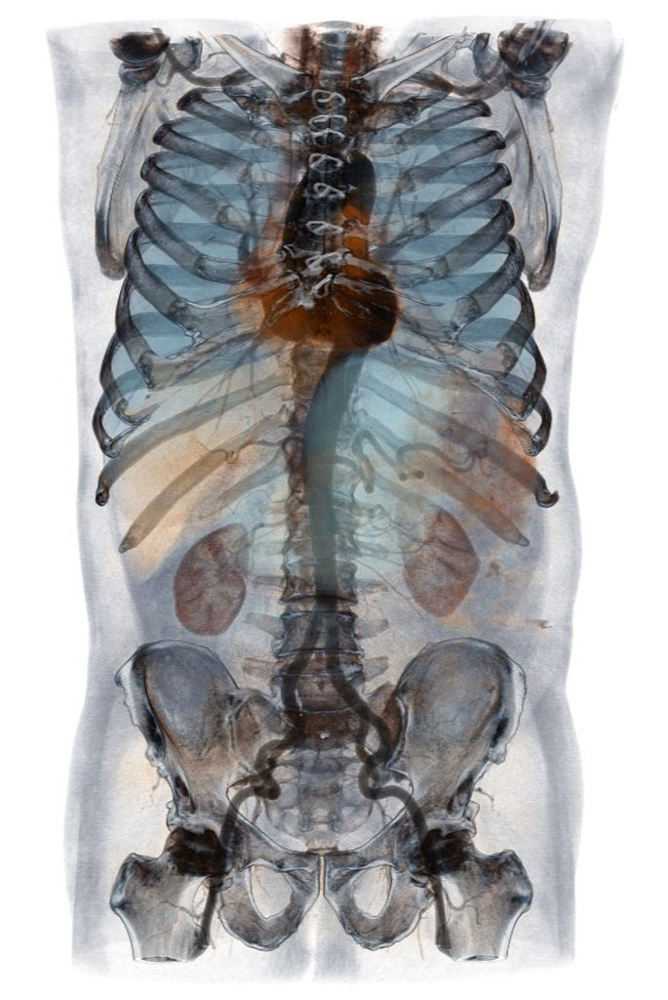
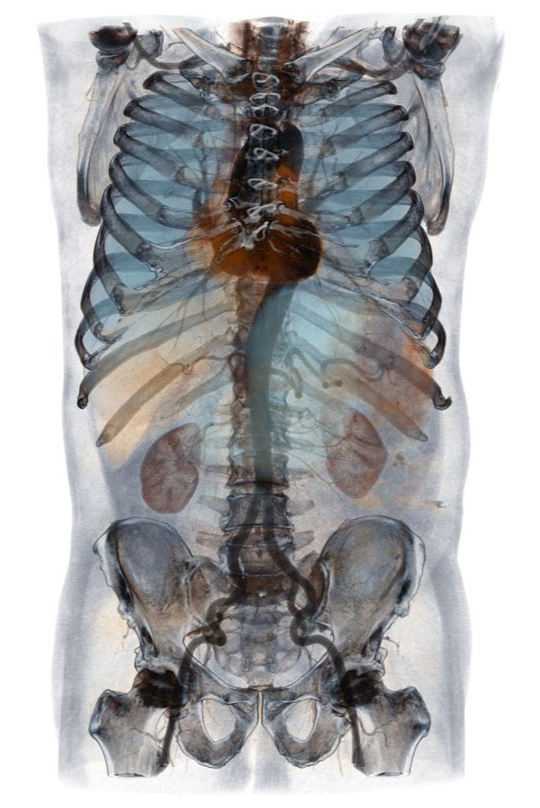

a. Brief summary:
Lleontyne's collection is about the elasticity and transformation of the human body.
b. Brief contextual description. In a few sentences, describe the images…
- What is the context / story?
- The collector successfully conveyed an overall feeling of grotesque, mysterious and strange.
- What is the content?
- There are background in some of the images. Some of them are shot intentionally with certain context, while others are off a neutral background.
- What is the quality of image?
- The images don't have very high resolution. The overall tone of the collection is low-saturated.
- Where do they come from?
- The collection doesn't have a certain source. The artworks come from several different artists. But most of them are of light skin color.
- Do they have a material quality?
- The images are all photos. Some of them are photos of real human bodies, while others are sculptures.
c. Make a list of at least 10 list items: words, phrases, concepts, emotions, ideas that describe your image collection
- Grotesque
- Elasticity of human body
- Stretchability of skin
- Blood
- Skin and texture
- Fabric and human body: similarity
- The transformation of human body to an alien or animal like
- Hands
- Heads
- Distortion






 
